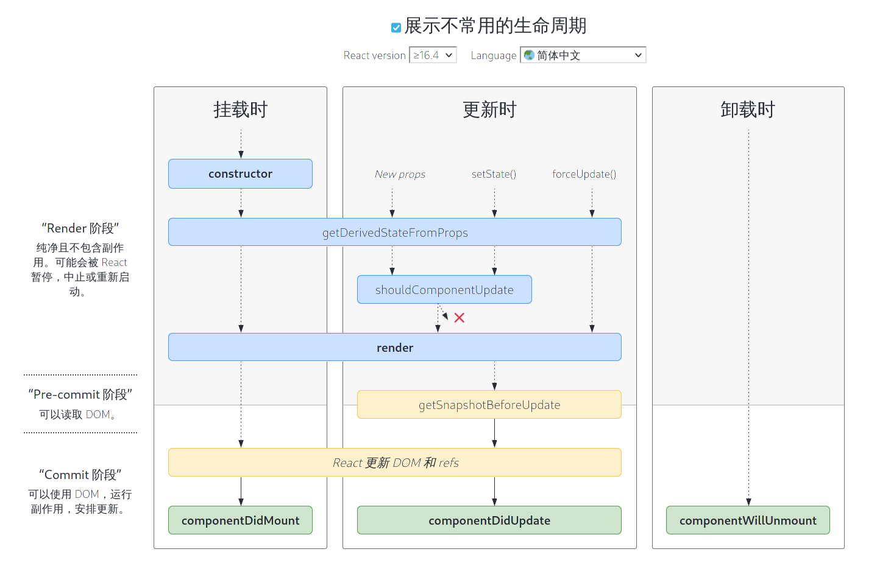

React组件生命周期
2019 reactReact 定义类的组件时会提供的更多功能，如生命周期。
- 生命周期图表
- 三个阶段
- Mounting 挂载
- Updating 更新
- Unmounting 卸载
- Error Handling 错误处理
- 常用的生命周期
- 不常用的生命周期
- 错误处理
- HOOK
- 父子组件的加载顺序
- 参考链接
生命周期图表

三个阶段
react 的生命周期主要分为三种，挂载，更新和卸载。同时每个生命周期要经历三个阶段，分别是 render、pre-commit 和 commit。
-
Render 阶段：是指 render 函数执行完返回 jsx 结构之前的过程。该阶段纯净且不包含副作用。可能会被 React 暂停，中止或重新启动。
-
Pre-Commit 阶段：是指返回 jsx 结构到更新 DOM 之前的过程。该阶段可以读取 DOM。
-
commit 阶段：是指更新 DOM，以及更新成功之后的过程。该阶段可以使用 DOM，运行副作用，安排更新。
Mounting 挂载
在创建组件并将其插入 DOM 时，将依次调用以下方法：
Updating 更新
当更新 props 或者 states 是，可能会重新渲染组件，将依次调用以下方法：
- static getDerivedStateFromProps()
- shouldComponentUpdate()
- render()
- getSnapshotBeforeUpdate()
- componentDidUpdate()
Unmounting 卸载
当从 DOM 中移除组件时，将调用以下的方法：
Error Handling 错误处理
当组件在构建或者渲染时发生错误，将调用以下的方法：
常用的生命周期
render
在类组件中 render 是唯一必须需要的方法。render 函数是纯净的，render 函数不会去修改组件的状态。
返回的类型有如下：
- React elements，典型例子就是 JSX。
- Array 和 fragments
- Portals
- String 和 numbers 当返回字符串或者数字的时候，会渲染成文本节点。
- Booleans 或者 null 不会渲染。
constructor
如果不进行初始化 state 或绑定函数，可以省略。constructor 会在 React 组件挂载前调用。如果是通过 React.Component 子类实现 constructor，那么任何声明之前都应该调用 super(props)。同时，this.props是未定义的，无法调用。
constructor 只用在以下两个目的：
- 初始化 state
- 函数绑定
constructor(props) {
super(props);
this.state = { counter: 0 };
this.handleClick = this.bandleClick.bind(this);
}
不建议将 props 复制到 state 里面。因为这样子不是必要的（可以直接使用 this.props.xx 代替），还容易出现问题（更新 prop 属性不会更新 state）。
constructor(props) {
super(props);
// Don't do this!
this.state = { color: props.color };
}
只有在你不想更新 prop 时才使用这种模式，而在这种情况下，将 props 重命名为 initialColor 或 defaultColor 更有意义。然后，你可以在必要时通过改变键值来重置内部状态。详见：Recommendation: Fully uncontrolled component with a key
componentDidMount
在组件挂载之后会立即调用 componentDidMount()，请求 DOM 节点的初始化，初始化一个网络请求应该放这里。
componentDidUpdate()
componentDidUpdate(prevProps, prevState, snapshot) 在组件更新之后会立即调用 componentDidUpdate()。注意，首次渲染的时候不会触发。
这里可以用作组件更新之后的操作，同时，这里也可以通过对当前 props 和之前 props 比较之后进行一些操作。
componentDidUpdate(prevProps) {
// 典型应用（不要忘记 props）:
if (this.props.userID !== prevProps.userID) {
this.fetchData(this.props.userID);
}
}
componentWillUnmount
在组件卸载或销毁之前会立即调用 componentWillUnmount。可以用来清除定时器，取消网络请求，取消订阅等。
不常用的生命周期
shouldComponentUpdate
shouldComponentUpdate(nextProps, nextState) 通过 shouldComponentUpdate() 可以让 React 知道组件在受到当前的 state 或 porps 中的影响下是否变化。默认是每次 state 更新的时候都会重新渲染，默认为 true。首次渲染或者当调用 forceUpdate() 该方法不知被调用。
这个方法仅适用于性能优化，不要依靠它来组织渲染，可能会导致 bug。使用内置的 PureComponent 代替手工的 shouldComponentUpdate。PureComponent 会对 props 和 state 进行浅层比较，从而减少一些不必要的更新。
当 shouldComponentUpdate 返回 false 时，componentDidUpdate，render 不会被调用。
static getDerivedStateFromProps
static getDerivedStateFromProps(props, state) 在调用 render 方法之前调用，包括挂载时和更新时。该方法要么返回一个更新 state 对象，要么返回 null 不更新。该方法的 state 取决于 props 的变化。
典型的应用场景：表单控件获取默认值。
getSnapshotBeforeUpdate
getSnapshotBeforeUpdate(prevProps, prevState) 该方法在页面 render 之前调用，state 已更新。它允许组件去获取信息在 DOM 更新之前，此生命周期返回的值会作为参数传递给 componentDidUpdate()。
错误处理
static getDerivedStateFromError()
static getDerivedStateFromError(error) 这个生命周期在错误抛出的时候调用。它接受错误作为参数，并且返回值更新 state。
componentDidCatch()
componentDidCatch(error, info) 此生命周期在后代组件抛出错误后调用。它接受两个参数
HOOK
useEffect 通过不同的参数设置可以模拟 componentDidMount, componentDidUpdate, componentWillUnmount 等生命周期。
// componentDidMount
useEffect(() => {
console.log('componentDidMount');
}, []);
// componentDidUpdate
useEffect(() => {
console.log('componentDidUpdate');
});
// componentWillUnmount
useEffect(() => {
return () => {
console.log('componentWillUnmount');
};
}, []);
注意：
- effect 的返回函数（清除函数）也会在每次 effect 生效重新渲染时执行，而不是只在卸载组件的时候执行一次，且会在 effect 运行之前执行。
- effect 里的 state 都是最新的。但 effect 里的返回函数（清除函数）的 state 是更新前的。
具体效果可以查看 codesandbox
父子组件的加载顺序
父子组件的生命周期顺序是如何的？
挂载时，子组件的挂载钩子会被先触发，卸载时，父组件的卸载钩子先被触发。
function Super() {
useEffect(() => {
console.log('Super Mounted.');
return () => {
console.log('Super UnMounted.');
};
}, []);
return (
<>
<div>Super</div>
<Sub />
</>
);
}
function Sub() {
useEffect(() => {
console.log('Sub Mounted.');
return () => {
console.log('Sub UnMounted.');
};
}, []);
return <div>Sub</div>;
}
代码实例：CodeSandBox
Super 组件在挂载卸载的过程中，分别输出：Sub Mounted，Super Mounted，Super UnMounted，Sub UnMounted